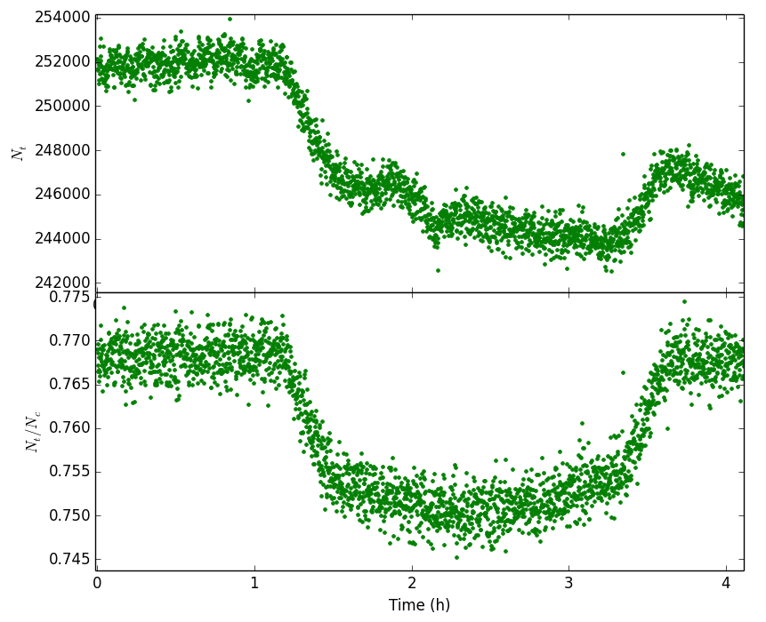

L02: Relative Photometry the basics

Now our photon has arrived at the telescope, and we have recorded an image. What can we do with the image? The simplest thing is to measure the brightness, or flux, of the stars in the image. This is called photometry.
Figure 10 shows a series of images. From each image we have measured the flux of the binary star NN Ser, and plotted flux vs time. In this lecture you will learn the details about how this is done.
Basic Principles
You should be very familiar with fluxes and magnitudes from PHY104 last year. If you are not, I suggest revising that topic! As a brief reminder, monochromatic flux is defined as \[ F_{\lambda} = \frac{\Delta E}{\Delta A \Delta t \Delta \lambda},\] where \(\Delta E\) is the energy arriving at our telescope, \(\Delta A\) is the collecting area of the telescope, \(\Delta t\) is the exposure time and \(\Delta \lambda\) is the wavelength range over which we have collected photons. Astronomers use filters to isolate chunks of the spectrum and take images of sources through these filters. The amount of the spectrum that a filter allows through is known as the bandpass, and the central wavelength of the filter bandpass is known as the effective wavelength. We will talk more about the types of filters used when we discuss photometric systems.
Telescope images are recorded on CCD detectors, which are similar to the detectors used in modern digital cameras. We will discuss CCD detectors in detail later, but we need to know a little bit about them now to proceed. In brief, CCDs consist of a number of pixels. When a photon arrives at a pixel, it produces an electron which is stored in the pixel. A CCD image consists of the number of counts in each pixel, where the counts are a number which is proportional to the number of electrons (and hence photons) captured in each pixel.
Let us call the number of counts detected from an object \(N_c\). This number is proportional to the number of photons arriving from the star. Thanks to the filter, all the photons detected are of similar wavelength and hence energy, the number of counts is proportional to the energy arriving from the objects, i.e \(N_c \propto \Delta E\). Calculating the constant of proportionality is essential for measuring properly calibrated photometry - we will look at this in a later lecture. However, suppose we are only interested in producing the light curve in figure 34. In this case we are interested in relative changes in the flux, as a function of time and we can proceed without knowing the constant of proportionality. The first step in photometry is thus to calculate the number of counts from an object in an image
Extracting Photometric Data
Determining the number of counts from a source in an image is usually a three-step process. The first step is to measure the centre of the source, which for the rest of this discussion we shall assume is a star. The second step is to estimate the sky background at the position of the star. The third step is to calculate the total amount of light received from the star.
Centroiding
The first step - accurately determining the centre of the star in the image (or centroiding) - is usually achieved by adding up the light from the star along the rows and then the columns of the CCD, giving a one-dimensional stellar profile in the x direction and another in the y direction. The resulting profiles, which are known as Point Spread Functions or PSFs are then fit with a one-dimensional Gaussian (or similar) function, akin to those shown in figure 11. The position of the centre of the Gaussian fit is then used as an estimate of the centre of the star, which can change as a function of time due to guiding and seeing variations. This technique can fail in crowded fields, or if the stellar PSF is very faint or highly non-Gaussian; a number of more complex centroiding techniques exist for such cases.


Sky Background
If we were to point our telescope at a part of the sky with no stars, we would not record zero counts in our pixels. This is because every pixel contains light from the night sky. This is also true of the pixels which receive light from the stars. Therefore we need to be able to distinguish how many counts come from the star, and how many from the sky background. To do this, we need an estimate of the number of counts each pixel receives from the sky.
To determine the sky background, the usual procedure is to measure the average number of counts in an annulus centred on the star, as shown in figure 12. Clearly, the inner radius of the annulus must be large enough to avoid contamination with light from the star at the centre, and the outer radius must be large enough to ensure that the annulus contains sufficient pixels for a robust estimate of the sky background.
Unfortunately, the annulus is unlikely to contain counts from the sky alone. There will also be contributions from cosmic rays, hot pixels, faint stars, and the wings of the PSF of the central star. All of these will add a positive skew to the histogram of pixel values in the annulus. The mean of these pixel values will then not be an accurate representation of the sky background. Instead, the sky level is usually determined using a more robust estimator, such as the median
Extraction
The final step is to extract the number of counts detected from the star. The usual way to do this is a technique known as aperture photometry. In this case, a software aperture, usually a circle or ellipse, is centred on the star, as shown in figure 12. The total signal from the star can then be calculated by summing the counts from each pixel that falls inside the aperture, and then subtracting the previously-determined sky background from each pixel.
The optimum aperture size to use depends on the brightness of the star. As the aperture size is increased, an increasing fraction of the star light will obviously be included in the sum. However, the increasing aperture size also allows in extra light from the sky, as well as extra detector noise, both of which will degrade the signal-to-noise ratio. Hence, as the aperture size is increased, a point will come when the combination of the extra sky and detector noise will dominate over the extra light included from the star. Usually, this optimum aperture size is found by trial and error, although a value 1.5-1.7 times the FWHM is a good starting point.

Figure 12: aperture photometry from a CCD image. The target is labelled as aperture 1. The non-variable comparison star is labelled as aperture 2 (in green). The unmarked bright star is saturated and hence unusable. The inner circle defines the total signal from the target. The annulus defined by the two outer circles is used to calculate the signal from the sky. Credit: Vik Dhillon
Relative Photometry
In principle, now we have measured the number of counts from a star, we could repeat that measurement in all of our images, and plot the number of counts against time to produce a lightcurve. However even if the intrinsic brightness of the star is constant, the number of counts we detect might change, due to transparency variations or seeing variations. To obtain an accurate lightcurve we need to correct for these effects.
Recall that the night sky shows time-variable transparency, due to light from our objects being absorbed and scattered by clouds. If the transparency of the atmosphere changes, so will the detected number of counts, even if the star maintains the same brightness. Seeing variations have a similar effect. Although changes in seeing do not effect the total amount of light reaching Earth, poorer seeing will result in the light being spread out over more pixels. As a result, a smaller fraction of the light will fall within our aperture, which has a fixed size.
Astronomers correct for these effects using a comparison star. This is a second star which is known (or assumed) to have a constant flux. We assume that the comparison star is affected in the same way as our target star by seeing and transparency variations (this is a very good assumption). Therefore, if transparency or seeing variations cause the counts from the target star, \(N_t\), to halve, they will also cause the counts from the comparison star, \(N_c\), to halve. The ratio \(N_t/N_c\) is therefore corrected for transparency and seeing variations. Correcting aperture photometry this way is known as relative photometry. An example of relative photometry is shown in figure 13.

Figure 13: Relative photometry of the exoplanet host star Tres-1. The top panel shows the number of counts from the star as a function of time. The star is setting and the counts gradually decrease to to atmospheric extinction. There is also a bump around 2 hours due to seeing variations. The bottom panel shows the ratio of counts from Tres-1 and a comparison star. This removes the effects of transparency and seeing variations, and the dip caused by the planet passing in front of the host star is clearly seen.
Magnitudes
Relative photometry provides an accurate measure of the count ratio of two stars, \(N_t/N_c\). Recall that the number of counts received from an object is proportional to the energy received from an object. In addition, because the target and comparison star are both observed with the same telescope (with collecting area \(\Delta A\)) and the same filter (with bandpass \(\Delta \lambda\)) in an exposure of the same time, \(\Delta t\), we can show that \[ N_t / N_c = F_t /F_c. \] In other words, the count ratio is equal to the flux ratio between the comparison star and the target star. Recall that the astronomical magnitude is defined as \[ m = -2.5 \log_{10} F + c,\] so that the difference between two magnitudes is \[m_t-m_c = -2.5 \log_{10} (F_t/F_c) = -2.5 \log_{10} (N_t/N_c).\]
Hence, if we know the magnitude of the comparison star, we can find the magnitude of the target star as well. Of course, this is all somewhat chicken-and-egg. If we need to know the magnitude of one star to find the magnitude of another, how do we get started, and measure the magnitude of the comparison star? That will be the topic of a later lecture, where we talk about calibrating our photometry.